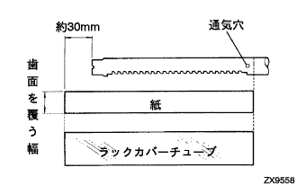
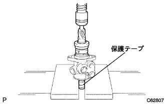
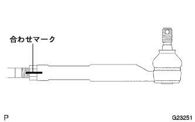

Power steering link assembly assembly |
| 1. Power steering rack housing Oil seal installation |
 |
Apply a power steering fluid to the lip of the new ratsuku housing oil seal.
Attach the ratuku housing oil seal diagonally to the ratsuku housing.
Use the SST to push the rack housing oil sticker by hand until you pass through the two ports.
After the ratsuku housing oil seal passes the lower port, turn the SST (09631-00190) over and attach it, and press it by hand until it becomes horizontal.
 |
Use SST and press to press the ratuku housing oil seal horizontally until it hits the ratsuku housing.
 |
Use a needle nose plier to attach a new rack -bushiu to the rack housing RH side.
| 2. Power steering rack inspection |
 |
Inspect the wear and damage of the tooth surface.
Inspect the bend of the steering rats using V -block and dial gauge.
| 3. Lux tairing piston ring installation |
Apply a power steering fluid to the new piston ring and O -ring.
Attach the O -ring to the steering rats.
 |
Piston ring is clicked with your finger so that it is easy to install.
Attach the piston ring to the steering rats.
 |
Use a hose clamp and a baki Yumhose to shrink the extended piston ring.
| 4. Power steering rack installation |
|  |
Cut the racks to be about 30 mm longer than the tip of the rack while the rack cover uve covers the tooth surface and port.
Cut paper with a thickness of a newspaper to the same length as Ratsuku cover cheube, covering the tooth surface of the steering rack.
 |
A chassis grease special is spent on the valley of the Steering Latsuku teeth.
Set the paper to cover the tooth surface.
Insert the ratk cover uve to the position that covers the port in the folded direction shown in the figure.
 |
Use the back side of the teeth, apply the steering ratsuku on the outlet of the dryer as shown in the figure, move the dryer in the Ratsu Cover Cho Uve to the B side, and transfer the dryer to the part B.Collect Ratsuku Cover Cheube.
 |
Rotate 180 ° only for Ratsuku Cover Uve.
Use the back of the teeth to contract Ratsuku Cover Cheube.
Draw the paper.
 |
While turning the steering rats, only the tip part C is warm enough, and quickly push the ratsuku cover chew and push into the screw hole of the rat quen.
Confirm that there is no protrusion at the tip and there is no edge.
Check that there is no scratch on the Ratsuku cover uve.
Apply a power steering fluid to the steering rats and the Ratsuku cover chew and the piston ring.
Attach the steering rats to Ratsuku Housing and remove the Ratsuku Cover Cheube.
| 5. Installation of cylinder end stopper |
Wrap the protective tape around the LH side of the steering rats and apply the power steering fluid.
Apply a power steering fluid to the lip of the new cylinder uve oil seal.
Attach a cylinder uve oil sticker to the LH side of the ratsuku housing.
Remove the protective tape from the steering rack.
Confirm that the bush on the inner surface of the cylinder end stats is not scratched.
Apply a chassis grease special to Bushu on the Sylinder End Stotspa.
 |
Use SST and hammer to insert the cylinder end statspa until the hole -spec ring mounting groove is visible.
| 6. Cylinder end stopper hole nappling installation |
 |
Use SST to attach a new holesnut spring.
| 7. Power steering rack housing airtight inspection |
Use SST and Mighty bag to apply a negative pressure of 58 kpa {400 mmhg} and confirm that the guideline has not changed when retained for about 30 seconds.
| 8. Power steering control valve spacer installation |
Use the sliding T -handle and a hammer to lightly drive two new control valve spacets.
| 9. Power steering control valve app installation |
 |
Apply MP grease No.2 to the lip of the new control valve and oil seal.
Use SST and press to press the control balbed pill seal.
Use SST and press to press the control balbed pabe assing.
| 10. Power steering control valve ring installation |
Apply a power steering fluid to four new control valve ring.
|
The control valve ring is extended so that it is easy to attach with your finger.
Attach the four control valve rings to the control valve and hold it down by hand.
 |
Use a hose clamp and a vacuum hose to shrink the extended control valve ring.
| 11. Power steering control valve installation |
|  |
Wrap a protective tape around the Selation Department of the control valve.
Apply a power steering fluid to the control balbaba pill oil seal.
Use a press to attach the control valve to the control valve housing.
Apply a chassis grease special to the valley of the pinion teeth and the needle roller bearing part in the ratsuku housing.
Attach a new gasket to the control valve housing assembly.
 |
Match the matching mark and attach the control valve asser with two bolts.
| 12. Power steering rack guide installation |
Apply a chassis grease special to the contact surface with the steering rack and rack housing.
Attach the ratk guide to the ratsuku housing.
Clean the spring cap and ratsuku housing screw.
Attach the ratk guide spring to the ratsuku housing.
Apply Adherive 1344 to the screw of the spring kyatsup and temporarily tighten it.
Mesh with the steering rats and the control valve.
Use a straight hexagon wrench 21 to attach a spring kyatsup.
| 13. Comprehensive pledo inspection |
Put the left and right racks to the steering rack.
Use SST to make the steering ratque a full stroke once or twice and blend in the steering rats.
 |
Inspect the comprehensive pre -road using SST.
Remove the left and right racks from the steering rack.
| 14. Steering rack end installation |
 |
Attach the two new claw washer to the left and right ratsquend cuts with the claws.
Temporarily attach two ratsquends.
Fill the MP grease No.2 on the rat queen ball joint.
Use 2 SST to tighten the left and right ratsquends.
Put the rat queen ball joint to the vise via an aluminum plate.
Use a brass bar and a hammer to shake the left and right claw washer.
| 15. Steering rack end Ventilation hole inspection |
 |
Insert the wire about 30 mm into the raccopic vent hole to check that it is not clogged.
| 16. Steering rack boots No.2 installation |
 |
Apply rubber grease to the inside of the small diameter of Ratsuku boots No.2.
 |
The new boot clamp No.2 is temporarily attached to the arrow (A) in the figure on the large diameter side of Ratsuku Boots No.2.
Attach the rack boots No.2 into the rack housing groove.
| 17. Steering rack boots No.1 installation |
| 18. Steering rack boots clamp No.2 installation |
Boots clamp No. using a pliers and a flathead screwdriverAttach 2.
| 19. Steering rack boots Clamp No.1 installation |
| 20. Steering rack boots clip installation |
Use the pliers to attach the left and right clips to the range of the figure.
 |
When the control valve is rotated using SST, make sure that the left and right rack boots extend and contract smoothly.
| 21. Tie rod end SUB-ASSY LH inspection |
 |
The ball joint of the Tyrozudend end LH is lightly fixed to the vise via an aluminum plate.
Temporarily attach the castle nut.
Five round trips of the ball joint.
Set the torque wrench into the nut, rotate the ball joint continuously at a speed of 1 turn / 3-5 seconds, and check the fifth rotation torque.
| 22. Tie rod end SUB-ASSY RH inspection |
| 23. Tie rod end sub-assy LH mounting |
|  |
The lock nut and the tie -tsudend end LH are combined to screw to the mark and temporarily tighten the rock nut.
| 24. Tie rod end sub-assy RH installation |
| 25. Steering left turning Pressure tube installation |
Use the Union Nut wrench 12 to attach the Left Turn Tetsujachi Uve.
| 26. Steering light turn pressure tube installation |